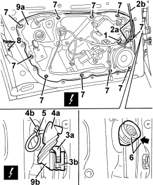
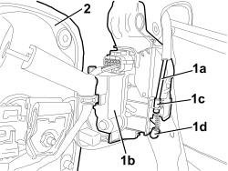
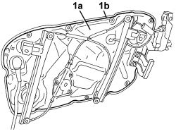

7005A08 INTERIOR SUPPORT FRAME FOR ONE SIDE DOOR - R.R. WITH DOOR PANEL REMOVED
- Path
- Procedures > 70 FITTINGS > 7005 PASSENGER COMPARTMENT FRONT SIDE DOORS > 7005A FRONT DOOR ASSEMBLY > 7005A08 INTERIOR SUPPORT FRAME FOR ONE SIDE DOOR - R.R. WITH DOOR PANEL REMOVED
- Kind
- repair procedure (removal / refitting; the operation number is the code)
- Applies to
- all engines; all production periods
- Interactive page
- https://sloeber94.github.io/elrnDB/alfa/159/en/#/939011109
Applies to: all engines; all production periods
 Removing
Removing
 Refitting
RefittingOp. 7005D30 FRONT SIDE DESCENDING WINDOW GLASS SCRAPER (INNER) (ONE), LEFT OR RIGHT - R.R.
Op. 7005D15 FRONT SIDE DOOR DESCENDING WINDOW GLASS (ONE) LEFT OR RIGHT - R.R
Op. 7005C17 FRONT SIDE DOOR LOCK BARREL - R.R.
1. Disconnect the electrical connection.
Description | Component |
|---|---|
DRIVER'S DOOR JUNCTION UNIT | |
PASSENGER SIDE DOOR JUNCTION UNIT |
2. Disconnect retainers (2a) of rear view mirror wiring (2b) from the chassis.
3. Lift ring nut (3a) and disconnect the door electrical connection (3b).
Description | Component |
|---|---|
REAR JOINT/FRONT DOOR DRIVER SIDE | |
REAR JOINT/FRONT DOOR PASSENGER SIDE |
4. Release the cable duct (4a) from the doro frame opening (4b).
5. Cut the door wiring retaining band.
6. Push the electrical connection into the door frame as far as possible.
7. Undo the bolts fixing the support frame.
8. Loosen the lock fixing bolts.
9. Move support frame (9a) slightly from the front side and remove connection (9b) from the door frame.

Applies to: all engines; all production periods
1. Disconnect link (1a) form the door frame (1b), undoing retainers (1c) and (1d).
2. Recover the support frame.

Applies to: all engines; all production periods
- If necessary carry out
Op. 7205E37 STRIPPING FRONT SIDE DOOR INTERIOR SUPPORT FRAME
Applies to: all engines; all production periods
Refitting
Removing- Check that the support frame is not damaged.
- If necessary carry out
Op. 7205E37 STRIPPING FRONT SIDE DOOR INTERIOR SUPPORT FRAME
1. Before positioning support frame (1a), check that the perimeter seal (1b) is undamaged and clean.
Also check that the contact surface on the door frame is clean.

Applies to: all engines; all production periods
1. Position the support frame.
2. Connect link (2a) to door frame (2b), doing up retainers (2c) and (2d).

Applies to: all engines; all production periods
1. Fit connection (1a) into the door frame so that it emerges from opening (1b).
2. Apply collar (2a) to the wiring to reduce free length.
Check that wiring (2b) does not interfere with glass movement.
3. Position the link from outer handle to lock (3a) as shown in the figure.
Before fitting the lock, check that link (3a) is in the position shown in the figure.
4. Tighten the lock fixing bolts.
Component | Fastening | dia | Value (daNm) | Validity |
|---|---|---|---|---|
DOOR LOCK | Bolt | M6x12 | 0.7 ÷ 1.1 |
5. Place frame (5a) in position and secure it using the bolts (5b).
Component | Fastening | dia | Value (daNm) | Validity |
|---|---|---|---|---|
DOOR INNER FRAME | Bolt | M6x16 | 0.7 ÷ 1.1 |
6. Fit the wiring duct to the door frame.
7. Connect electrical connection (7a) to the door and secure with ring nut (7b).
8. Disconnect retainers (8a) of rear view mirror wiring (8b) from the chassis.
9. Connect the rear view mirror electrical connection.

Applies to: all engines; all production periods
Op. 7005C17 FRONT SIDE DOOR LOCK BARREL - R.R.
Op. 7005D15 FRONT SIDE DOOR DESCENDING WINDOW GLASS (ONE) LEFT OR RIGHT - R.R
Op. 7005D30 FRONT SIDE DESCENDING WINDOW GLASS SCRAPER (INNER) (ONE), LEFT OR RIGHT - R.R.
Topics linked from this page (8)
- 7005C17 FRONT SIDE DOOR LOCK BARREL - R.R.
- 7005D15 FRONT SIDE DOOR DESCENDING WINDOW GLASS (ONE) LEFT OR RIGHT - R.R
- 7005D30 FRONT SIDE DESCENDING WINDOW GLASS SCRAPER (INNER) (ONE), LEFT OR RIGHT - R.R.
- 7205E37 STRIPPING FRONT SIDE DOOR INTERIOR SUPPORT FRAME
- D030 DRIVER'S FRONT DOOR COUPLING
- D031 PASSENGER FRONT DOOR COUPLING
- M066 DRIVER'S DOOR CONTROL UNIT (NPG)
- M067 PASSENGER DOOR CONTROL UNIT (NPP)
Topics that link to this page (10)
- 5505B11 FRONT DOOR WIRING (ONE) LEFT OR RIGHT - R.R
- 7005A09 FRONT SIDE DOOR INTERIOR SUPPORT FRAME - R.R.
- 7005C10 FRONT DOOR EXTERIOR HANDLE - R.R WITH DOOR PANEL REMOVED
- 7005C11 FRONT SIDE DOOR EXTERIOR HANDLE - R.R
- 7005C41 FRONT SIDE DOOR EXTERIOR HANDLE LOCK CONNECTION LINK - R.R
- 7005D24 FRONT DOOR WINDOW REAR GUIDE - R R
- 7005D25 FRONT DOOR WINDOW REAR GUIDE - R R
- 7005D33 CHANNEL FOR DOOR DESCENDING GLASS INNER GUIDE (ONE) LH OR RH ON FRONT SIDE DOOR - R.R.
- 7005M26 ELECTRIC WINDOW MECHANISM FOR ONE FRONT DOOR LH OR RH - R.R
- 7005N21 FRONT SIDE DOOR LOCK MOTOR/LOCK ASSEMBLEY FOR ONE DOOR, LEFT OR RIGHT - R.R.